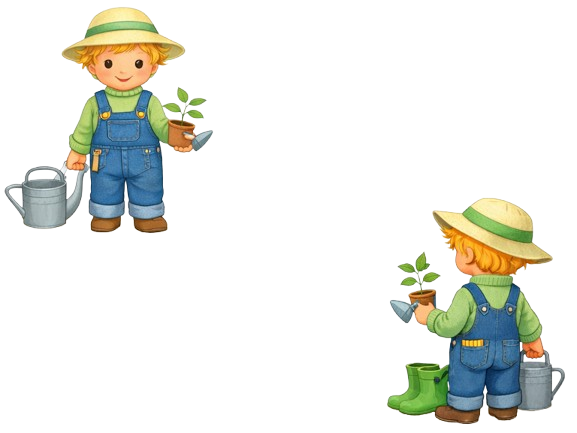

Jardin & Jardinage
Conseils pratiques pour le potager, l’entretien du jardin, les plantes, les saisons, l’écologie et la récupération.
➕ Proposer une astuce jardinage
Astuces jardin & jardinage
Conseils pratiques pour le potager, l’entretien du jardin, les plantes, les saisons, l’écologie et la récupération.